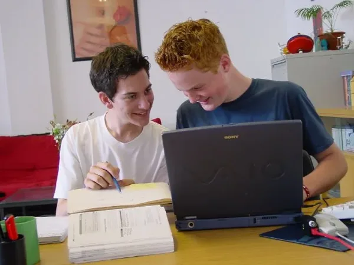
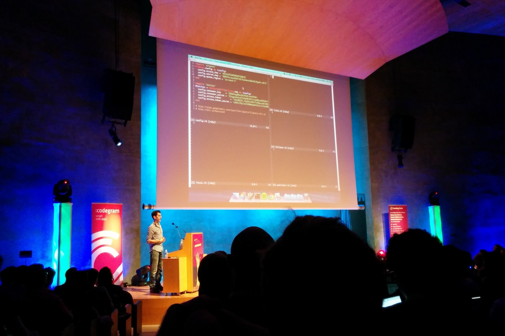
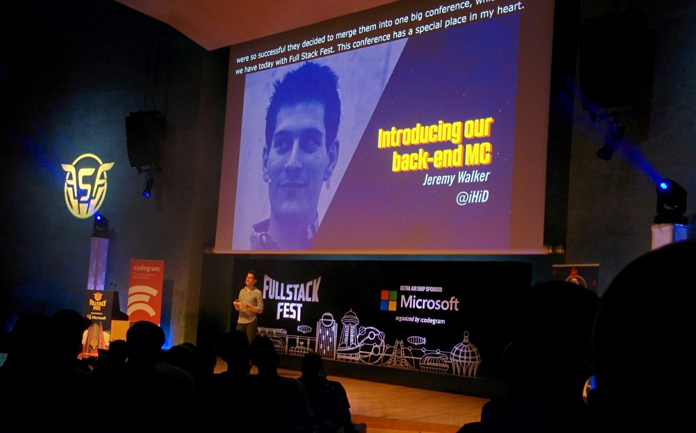
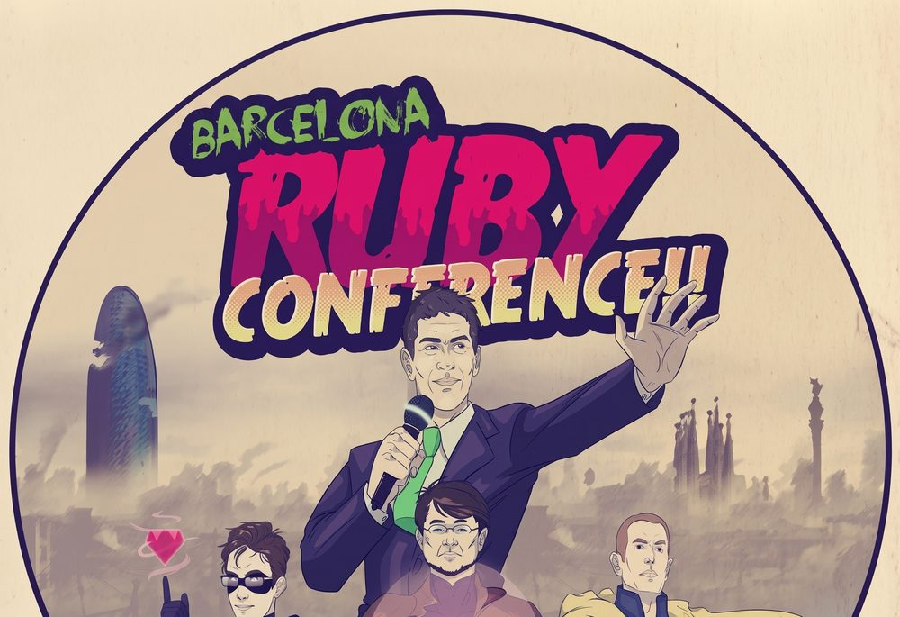
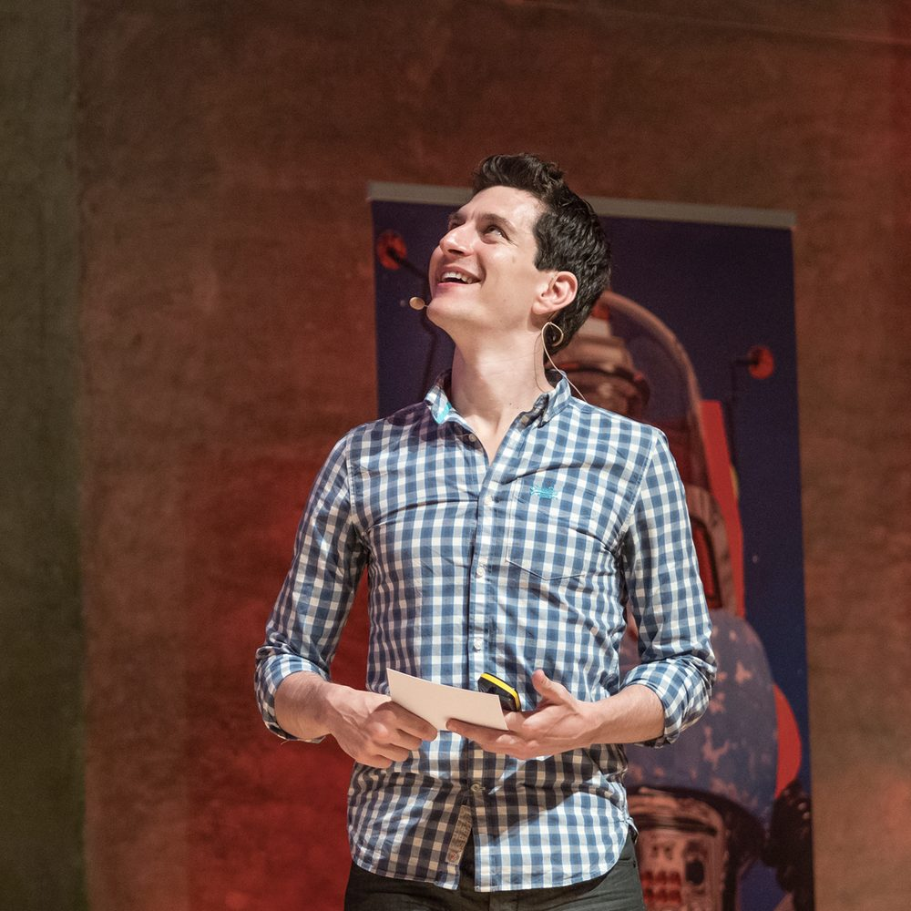
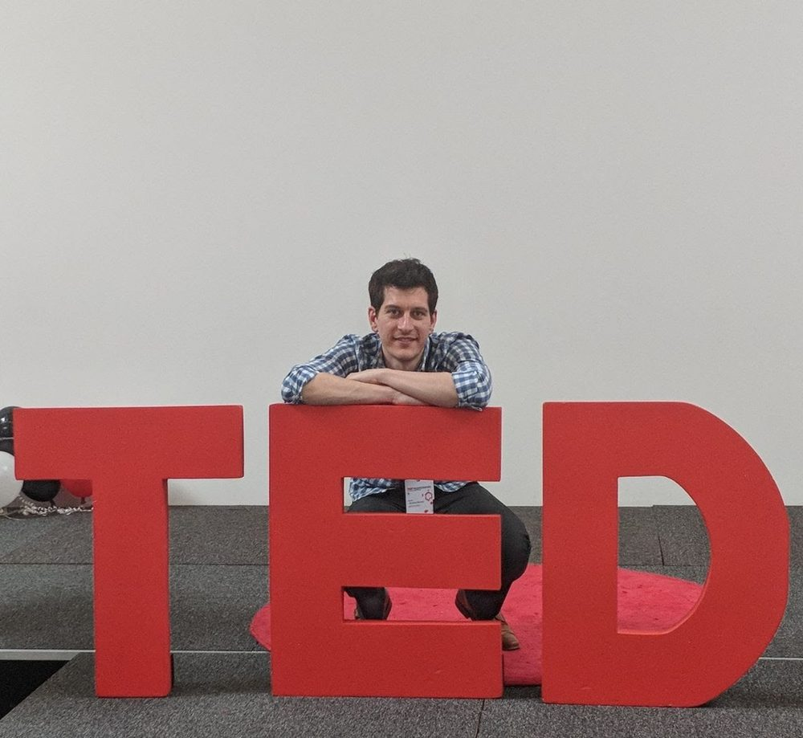

Hi there, I'm Jeremy — nine tag styles
Nine treatments for the same facts, from a straight translation of the chess-course reference through to things this page has never done. Credentials (senior developer, 20 years, AI background, founder of Exercism, conference speaker, patent holder) and achievements (2M+ taught, 40+ countries, free forever) always get different treatments from each other. The amount of prose varies too — the badge on each idea says how much, from no paragraph at all (7) through two sentences and the eight-sentence version from the credentials & achievements page. Treatments and copy lengths mix freely: any tag style here works with any length.
Annotated portrait — the reference, translated
8 sentencesThe credentials float around him with hand-drawn arrows running outwards from the photo to each one, so they read as things radiating from him rather than being pinned on; two carry a Caveat sub-note. The achievements come off the canvas entirely and open the copy block as purple tags, which keeps the drawing to one kind of fact and stops the numbers competing with the portrait. Achievements take purple, credentials stay near-black — the same two-tier read the reference gets from its pink and its black. Needs a background-free cut-out of Jeremy to work; shown here on the circular photo we have, which is why the arrows land softer than they should.

Founder of Exercismfree, forever,
for everyone
20+ years of building software
Started out in AIback when that
meant something else
Conference speakerBaruco, Full Stack Fest,
and plenty more
Patent holderstill used in
heart surgery
Hi there! 👋 I'm Jeremy, and I've helped over two million people level up their coding skills.
I've been writing software for twenty years and I still think it's the most fun you can have with a keyboard. I've built companies that worked, a couple that spectacularly didn't, and founded Exercism — a not-for-profit that has now taught over two million people to code, for free. What all of that taught me is that nobody learns to code by watching someone else do it. So Jiki doesn't hand you answers: it hands you a problem just past what you can already do, then stays next to you while you work it out. When you get stuck it tells you what your code actually did, in plain English, instead of leaving you to decode an error message. I'm not trying to get you through a quiz — I want you to be the person your friends call when their laptop is on fire. Programming gave me a career, a livelihood and a genuinely brilliant twenty years making things. I'd very much like you to have that too.
— JeremySpeech bubbles
2 sentencesThe facts as things he is saying rather than labels stuck on him. Portrait hard left, the bubbles filling the column beside it and wrapping into rows, each one a single unbroken line with its tail on the left edge pointing back at him. Achievements in solid purple, credentials in white. Warmer than idea 1, and the only annotation idea that works with the circular photo the page already has — a tail can point at a disc perfectly happily, an arrow cannot.
Hi there! 👋 I'm Jeremy, and I've helped over two million people level up their coding skills.
Twenty years building software, and I founded Exercism — a not-for-profit that's taught over two million people to code for free. Jiki is me trying to do that properly: no answers handed over, just a problem slightly past what you can already do, and someone sat next to you while you work it out.
— JeremyStickers
8 sentencesChunky rotated tags with a hard offset shadow — laptop stickers. Achievements get the brand fills, credentials stay white. Speaks the same language as the sticker-press CTA button in cta-button-ideas.html, so it would not arrive alone.
Hi there! 👋 I'm Jeremy, and I've helped over two million people level up their coding skills.
I've been writing software for twenty years and I still think it's the most fun you can have with a keyboard. I've built companies that worked, a couple that spectacularly didn't, and founded Exercism — a not-for-profit that has now taught over two million people to code, for free. What all of that taught me is that nobody learns to code by watching someone else do it. So Jiki doesn't hand you answers: it hands you a problem just past what you can already do, then stays next to you while you work it out. When you get stuck it tells you what your code actually did, in plain English, instead of leaving you to decode an error message. I'm not trying to get you through a quiz — I want you to be the person your friends call when their laptop is on fire. Programming gave me a career, a livelihood and a genuinely brilliant twenty years making things. I'd very much like you to have that too.
— JeremyGradient outline
2 sentencesAchievements in pills with a purple-to-blue gradient border and the figure itself gradient-filled, tying the Learn-to-Code purple and Learn-to-Build blue together in one mark. Credentials sit underneath as small lowercase monospace on soft grey — so nothing competes with the pills above.
Hi there! 👋 I'm Jeremy, and I've helped over two million people level up their coding skills.
Twenty years building software, and I founded Exercism — a not-for-profit that's taught over two million people to code for free. Jiki is me trying to do that properly: no answers handed over, just a problem slightly past what you can already do, and someone sat next to you while you work it out.
— JeremyHand-circled
8 sentencesCredentials as a plain grey line; each achievement ringed with a wobbly marker ellipse, as if someone went through and circled the bits that matter. Closest of the twelve to the page's existing hand-drawn language, and it costs no extra furniture.
Hi there! 👋 I'm Jeremy, and I've helped over two million people level up their coding skills.
Senior developer·20 years experience·AI background·Founder of Exercism·Conference speaker·Patent holder
I've been writing software for twenty years and I still think it's the most fun you can have with a keyboard. I've built companies that worked, a couple that spectacularly didn't, and founded Exercism — a not-for-profit that has now taught over two million people to code, for free. What all of that taught me is that nobody learns to code by watching someone else do it. So Jiki doesn't hand you answers: it hands you a problem just past what you can already do, then stays next to you while you work it out. When you get stuck it tells you what your code actually did, in plain English, instead of leaving you to decode an error message. I'm not trying to get you through a quiz — I want you to be the person your friends call when their laptop is on fire. Programming gave me a career, a livelihood and a genuinely brilliant twenty years making things. I'd very much like you to have that too.
— JeremyTicker
8 sentencesCredentials static as small outline chips; achievements running as an infinite marquee between two hairlines. Puts motion into a section that currently has none — but it is decorative motion carrying real information, so it has to pause on hover and stop entirely under reduced-motion.
Hi there! 👋 I'm Jeremy, and I've helped over two million people level up their coding skills.
I've been writing software for twenty years and I still think it's the most fun you can have with a keyboard. I've built companies that worked, a couple that spectacularly didn't, and founded Exercism — a not-for-profit that has now taught over two million people to code, for free. What all of that taught me is that nobody learns to code by watching someone else do it. So Jiki doesn't hand you answers: it hands you a problem just past what you can already do, then stays next to you while you work it out. When you get stuck it tells you what your code actually did, in plain English, instead of leaving you to decode an error message. I'm not trying to get you through a quiz — I want you to be the person your friends call when their laptop is on fire. Programming gave me a career, a livelihood and a genuinely brilliant twenty years making things. I'd very much like you to have that too.
— JeremyHeadline only
no prose, no tagsThe extreme low-text end: no tag row and no paragraph at all. The facts are folded into one oversized sentence, with the numbers picked out in purple, and a single handwritten line underneath for the personality. Whole section reads in about four seconds — and gives up every fact that does not fit the sentence.
Hi 👋 I'm Jeremy. I've spent 20 years building software. I'm a patent holder, conference speaker and mission driven entrepreneur. My products have taught 2M+ people to code across 40+ countries.
Jiki comprises everything I've learnt about education and coding — hopefully into the best product I've made. — Jeremy
Proof strip
2 sentencesThe only idea that shows a credential instead of stating it. "Conference speaker" is the one claim on the list that can be photographed, so the tag row stays plain and the evidence goes underneath as a looping strip — a teenage Jeremy at a laptop where it all began, him on stage at Baruco, at Full Stack Fest and mid-talk, the Baruco line-up poster, and him at TEDx. Because it loops, a sixth shot costs no more room than three. Needs real photography, but it is the only version a sceptical reader cannot wave away.
Hi there! 👋 I'm Jeremy, and I've helped over two million people level up their coding skills.






Twenty years building software, and I founded Exercism — a not-for-profit that's taught over two million people to code for free. Jiki is me trying to do that properly: no answers handed over, just a problem slightly past what you can already do, and someone sat next to you while you work it out.
— JeremyTyped out
2 sentencesIdea 2 with time added: the bubbles fill in one after another and the words type themselves out, caret and all, as though he is writing to you as you scroll past. Same wrapped row as idea 2 — each bubble is measured and pinned to its finished width before the text is cleared, so nothing on screen moves while the words arrive. Scroll it into view to watch, or hit replay.
Hi there! 👋 I'm Jeremy, and I've helped over two million people level up their coding skills.
Twenty years building software, and I founded Exercism — a not-for-profit that's taught over two million people to code for free. Jiki is me trying to do that properly: no answers handed over, just a problem slightly past what you can already do, and someone sat next to you while you work it out.
— Jeremy